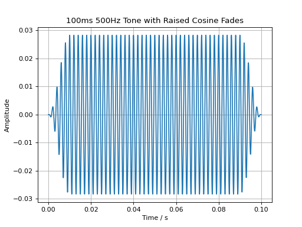

Introduction
audiotoolbox is a Python package designed to generate and analyze acoustic stimuli for use in auditory research. It aims to provide an easy-to-use and intuitive interface.
The main API of audiotoolbox provides a fluent interface for generating and analyzing signals. In a fluent interface, methods are applied in-place and the object itself is returned, which allows methods to be chained together.
The following commands create a 100 ms long signal, add a 500 Hz tone, set its level to 60 dB SPL, and apply a 10 ms fade-in and fade-out.
import audiotoolbox as audio
import matplotlib.pyplot as plt
sig = audio.Signal(n_channels=1, duration=100e-3, fs=48000)
sig.add_tone(500).set_dbspl(60).add_fade_window(10e-3, 'cos')
plt.plot(sig.time, sig)
plt.title('100ms 500Hz Tone with Raised Cosine Fades')
plt.xlabel('Time / s')
plt.ylabel('Amplitude')
plt.grid(True)
plt.show()
(Source code, png, hires.png, pdf)
{kind=link}
{kind=link}

The Signal class
The audiotoolbox.Signal class is used to work with signals in the time
domain. It inherits from the numpy.ndarray class and thus also inherits
all of its methods. This makes it directly compatible with most packages
in the scientific Python stack, such as scipy and matplotlib.
To create an empty signal, call the class with the number of channels, the duration of the stimulus, and the sampling rate.
>>> sig = audio.Signal(n_channels=2, duration=1, fs=48000)
>>> sig.shape
(48000, 2)
Basic properties of the signal, such as the number of channels, samples, or the duration, are available as properties:
>>> sig.n_channels, sig.duration, sig.n_samples, sig.fs
(2, 1.0, 48000, 48000)
Signals can have multiple dimensions:
>>> sig = audio.Signal(n_channels=(2, 3), duration=1, fs=48000)
>>> sig.shape
(48000, 2, 3)
To directly index individual channels, the object provides the ch property,
which also supports channel slicing:
>>> sig = audio.Signal(n_channels=(2, 3), duration=1, fs=48000)
>>> channel_slice = sig.ch[0, :]
>>> channel_slice.shape
(48000, 3)
By default, methods are always applied to all channels. The following example adds the same noise signal to both channels:
>>> sig = audio.Signal(n_channels=2, duration=1, fs=48000)
>>> sig.add_noise()
>>> np.all(sig.ch[0] == sig.ch[1])
True
Use the ch indexer to apply methods to individual channels. This
example adds different noise signals to each channel:
>>> sig = audio.Signal(n_channels=2, duration=1, fs=48000)
>>> sig.ch[0].add_noise()
>>> sig.ch[1].add_noise()
>>> np.all(sig.ch[0] == sig.ch[1])
False
The FrequencyDomainSignal class
audiotoolbox provides a simple mechanism for switching between time-domain and frequency-domain representations of a signal.
>>> sig = audio.Signal(n_channels=2, duration=1, fs=48000).add_noise()
>>> type(sig)
<class 'audiotoolbox.signal.Signal'>
>>>
>>> fdomain_sig = sig.to_freqdomain()
>>> type(fdomain_sig)
<class 'audiotoolbox.freqdomain_signal.FrequencyDomainSignal'>
Calling the to_freqdomain() method returns a FrequencyDomainSignal
object containing the FFT of the signal. It is important to note that
the frequency components are normalized by dividing them by the number of
samples.
Like the Signal class, FrequencyDomainSignal inherits from
numpy.ndarray, and an empty object can be created using a similar syntax:
>>> sig_freq = audio.FrequencyDomainSignal(n_channels=2, duration=1, fs=48000)
>>> sig_freq.shape
(48000, 2)